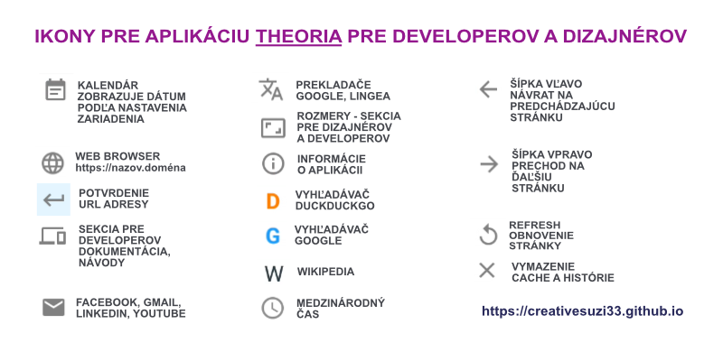

VITAJTE NA STRÁNKE
Curriculum vitae
Volám sa Zuzana. Som zo Slovenska. Hľadám prácu alebo dlhodobý projekt. Môžem pracovať v odbore informačných technológií, administratíve alebo ako šoférka či kuriérka. Mám dlhodobú prax s prácou na PC, písaním na stroji, elektronikou či šoférovaním. Zaujímam sa o informačné technológie (operačné systémy, tvorbu webových stránok či mobilných aplikácií, inštalovaním softwaru a operačných systémov prostredníctvom virtuálnych počítačov a testovanie funkcií, taktiež tvorím obsah na web a aplikácie). Som zodpovedná, samostatná, mám technické myslenie a zmysel pre detail. Rada blogujem a učím sa nové veci.
- 2026: Čítanie (v slovenčine, češtine a angličtine) & učenie; hľadanie si novej práce alebo dlhodobého projektu ...
- 2025: Začiatok štúdia game design (teória digitálnych hier; inštalácia Visual Studio a prvé kroky s Unity); môj prvý článok v angličtine o informačných technológiách k môjej aplikácii Theoria; Mac OS a Parallels Desktop s operačnými systémami (a softwarom na MS Windows 10/11, MS Office 365, Unity, 3ds Max, Steam, Blender, Adobe Creative Cloud; Kali Linux, Fedora, Linux Mint; Android); spravovanie účtu a tvorba obsahu na TikTok; tvorba videí cez Adobe Express
- 2024: Preukaz vodiča vozidla Taxi služby: psychologické testy, vodičský preukaz skupiny B; kurz angličtiny (B1)
- 2022: Tvorba ilustrácie (Adobe Illustrator a Photoshop): nastavenie dokumentu, import obrázkov, práca s vrstvami, kreslenie tvarov s nástrojmi, práca s tieňovaním a štetcami, export do .jpg a .png formátov; práca s Affinity Designer/Photo/Publisher
- 2021: Návody pre platformu IT Network; blogovanie na mojej webovej stránke
- 2020 - 2025: Začiatočníčka s (programovacími) jazykmi Java, C, C++, C#, Python, JavaScript, React, PHP, HTML5, CSS3, XML; digitálna elektronika...
- 2019: Kurz WordPress (nastavenie, hosting, pluginy, bezpečnosť, rýchlosť, optimalizácia pre vyhľadávače, kontaktné formuláre, Google Analytics, Search Console); IT Blogger; spravovanie účtov na sociálnych sieťach (Facebook, Instagram, Twitter, ...)
- 2018: Môj prvý WordPress blog a android aplikácia vytvorená builderom Sketchware Franziskus (upload neskôr); Mac OS, Keynote, Pages, Xcode, Sparkle, ...
- 2017: Samoštúdium; inštalovanie operačných systémov a softwaru vo VirtualBox (MS Windows, Linux Mint, Ubuntu, Slax), VM ware player (MS Windows and Linux); Website X5...
- 2016: Štúdium informatiky...
- 2010: Práca na PC s použitím technických prostriedkov (MS Windows, MS Office, Facebook, Email; kurz s certifikátom; 90% opakovanie znalostí, ktoré som nadobudla samoštúdiom)
- 2005 - 2006: Kurz anglického jazyka (A2)
- 2003: Záujem o informačné technológie so samoštúdiom: Email, Internet, tvorba webovej stránky (HTML), MS Windows, MS Office
- 2001: Vodičský preukaz skupín: A, B
- 1997: SOU strojárske s maturitou: Strojárstvo - Podnikanie a služby (strojopis a hospodárska korešpondencia, účtovníctvo, marketing, ekonomika, informatika, AutoCAD, technické kreslenie)
- 1995: Strojopis a hospodárska korešpondencia: štátna skúška s certifikátom
Theoria

Na konci života ťa budú súdiť z lásky. (svätý Ján z Kríža, karmelitán)
Theoria je pekná android aplikácia pre developerov, dizajnérov a ľudí, ktorí sa radi učia nové veci. Zahŕňa sekcie (kalendár, webový prehliadač, stránky s dokumentáciou pre developerov, sociálnymi sieťami, prekladačmi, medzinárodným časom a niekoľkými základnými rozmermi obrázkov - logo pre sociálne siete a podobne).
Súbor s aplikáciou Theoria je potrebné najkôr rozbaliť. Pred inštaláciou mobilnej aplikácie je potrebné povoliť v smartfóne inštaláciu aplikácii (tretích strán) bez použitia Google App Store. Možno budete musieť viackrát kliknúť na áno a inštalovať aj tak.
Kalendár: Po inštalácii a spustení aplikácie uvidíte úvodnú obrazovku s kalendárom.
Prehliadač s vyhľadávačmi: Táto časť zahŕňa jednoduchý browser s vyhľadávačmi. DuckDuckGo používajú ľudia, ktorí nemajú radi Google. Google používa väčšina ľudí na svete. Wikipedia je pre začiatočníkov.
Dev: Táto sekcia je pre ľudí, ktorí sa učia programovať ako aj pre programátorov. Je tam množstvo webových stránok s rôznymi technológiami, proramovacími jazykmi a dokumentáciou. Ak sa človek chce naučiť programovať, potrebuje poznať viac ako jeden programovací jazyk. Musí mať znalosti o databázach, operačných systémoch, počítačových sieťach, frameworkoch, knižniciach, pokročilých editoroch. To všetko pre efektívnu tvorbu softwaru a aplikácií.
Sociálne siete: Nachádzajú sa tu niektoré sociálne siete na komunikáciu a prácu (Facebook, Gmail, LinkedIn, YouTube).
Prekladače: Veľa obsahu je v anglickom jazyku a nie každý ho ovláda. Je možné si vybrať z dvoch prekladačov: Google Translate a Lingea.
Veľkosti: Každý developer a dizajnér potrebuje poznať veľkosti, tu nájdete základné veľkosti obrazoviek, obrázkov na sociálne siete a logá.
Dátum a medzinárodný čas: Ľudia pracujúci ako tvorcovia webových stránok či aplikácií, hľadajú informácie a spoluprácu s ľuďmi po celom svete. Preto je dobré poznať medzinárodný čas.
Ponuka
Tvorba digitálnych produktov: Kontakt.
- Písanie: články, recenzie, dokumentácia, emailing, e-knihy ...
- Tvorba obsahu: obrázky, videá, text...
- Website: HTML5, CSS3, WordPress, WooCommerce, buildery, JS a PHP skritpty
- Aplikácia: pomocou builderov
- E-kniha: PDF, EPUB
- Virtuálne asistentka: administratíva, administrácia webovej stránky alebo e-shopu, tvorba a administrácia obsahu pre vašu spoločnosť
- Administrácia: webová stránka, hosting, e-shop, sociálne siete...
GDPR
Môžem zbierať osobné údaje z emailových účtov a správ, ktoré ste uviedli pri kontakte so mnou, ako napríklad meno, email, webová stránka. Ak si neželáte, aby boli vaše osobné údaje zbierané, prosím, kontaktujte ma pre vyjadrenie nesúhlasu so zbieraním vašich osobných údajov.
Obchodné podmienky: Na produkty, ktoré vytvorím si uplatňujem právo autorského diela.
Ak si objednávate obsah alebo tovar, je možné, že budete musieť zadať svoje údaje na zaslanie produktov či platobné údaje. Vaše osobné údaje budem uchovávať pre možné budúce objednávky alebo zaslanie newslettera pokým mi nedáte písomne vedieť, že nemáte záujem, aby som vaše osobné údaje uchovávala pre tieto účely.
Odstúpenie od zmluvy: Ak budete chcieť odstúpiť od zmluvy v čase ukončenia alebo pred ukončením digitálneho produktu, bude vám strhnutá suma 10-30% z hotového produktu. (Ak ste si objednali fyzický produkt a balík bol odoslaný, nepreberajte ho. Ak ho preberiete, všetky náklady spojené s vrátením balíka platí objednávateľ/ka.)